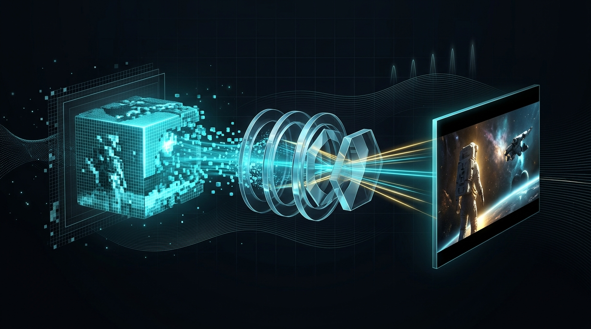

级联生成：为什么顶级系统都选择「先 T2V 低分，再 V2V 高分」？
很多刚入行的同学会问一个非常朴素的问题：「既然大家最后都要看 1080p 甚至 4K 视频，为什么不直接端到端一步生成 4K，非要多此一举先画个 480p 的草稿，再用 V2V 超分精修呢？」答案很简单：这不是妥协，而是遵循信息论与 Transformer 二次方算力定律的最优解！

一、算一笔吓人的账：Transformer 的 O(N²) 算力悬崖
假设我们用标准的 4×8×8 3D-VAE + 1×2×2 Patchify（等效空间下采样 16×，时间下采样 4×），来看一段 5 秒、24fps（共 120 帧 → 30 个潜空间帧）的视频在不同分辨率下的 Token 数量与 Full Attention 计算量：
| 目标分辨率 | 单帧空间 Token | 5 秒总 Token 数 (N) | Attention 复杂度 (N²) 相对倍数 | 端到端直接 50 步生成体验 |
|---|---|---|---|---|
| 480p (832×480) | 52 × 30 = 1,560 | 46,800 | 1.0×（基准） | 丝滑！大运动与全局构图学得又快又稳 |
| 720p (1280×720) | 80 × 45 = 3,600 | 108,000 | 5.3× | 开始吃力，单卡显存告急 |
| 1080p (1920×1080) | 120 × 68 = 8,160 | 244,800 | 27.4× | 惨烈！需要多卡 Context Parallel，且很难学到大范围运动 |
| 4K (3840×2160) | 240 × 135 = 32,400 | 972,000（近百万！） | 431.0× 💥 | 几乎不可行，直接 OOM + 慢到天荒地老 |
更要命的是「注意力稀释效应」：在 4K 画面里，每个像素块只占画面的万分之一，让模型从纯高斯白噪声开始，直接协调一百万个 Token 共同演化出「一只豹子从左跑到右、镜头同步推进」的全局物理规律，模型会严重迷失在局部细节里，反而比 480p 更容易出现肢体扭曲和运动僵硬！
二、两阶段级联（Cascaded Pipeline）到底是怎么配合干活的？
把「规划运动」和「雕琢纹理」彻底解耦，让专业的人干专业的事：
三、V2V 高分精修阶段的四大工程秘籍
1. 为什么不能只用传统 CNN 超分（如 Real-ESRGAN）？
传统图像超分（Real-ESRGAN）是逐帧独立放大的，有两个致命伤：① 画面会出现恶心的高频闪烁（Temporal Flickering），草地和人脸毛孔每一帧都在跳；② 它只能做「锐化磨皮」，没法凭空补出合理的电影质感细节。而基于 Video Diffusion / Flow Matching 的 V2V Refiner（如字节 SeedVR2、FlashVSR、LTX 潜空间精修器）本身带有 3D 时空注意力，能生成跨帧完全一致的真实高频纹理！
2. 加噪强度（Noise Augmentation）的黄金平衡
把 Stage 1 的低分视频放大后送给 Stage 2，为什么要先加一点噪声（比如加到 t = 0.35）？
- 加噪太少（t < 0.15）：Stage 1 低分视频里的模糊伪影、轻微手指畸变会被原封不动锁死，Stage 2 没空间去修复它。
- 加噪太多（t > 0.65）：Stage 2 开始「自由发挥」，把主角脸画变了、把原本精准对齐的口型画歪了！
- 最佳工业实践：训练 Stage 2 时就模拟 Stage 1 的真实退化分布（低分下采样 + 轻模糊 + 轻微扩散伪影），并将低分视频作为 Channel-Concat 条件喂给模型，配合 1–4 步蒸馏（如 SeedVR2 一步扩散超分），既保 100% 结构与口型一致，又能把清晰度拉满！
3. 4K 超大画面防 OOM：空间/时间 Tile 分块融合
就算 Stage 2 只需要 4 步，直接把 4K 视频整块塞进单张 GPU 显存也还是会爆。工程上采用 Overlapping Spatio-Temporal Tiling（重叠时空分块）：把 4K 画面切成若干个有 20% 重叠边缘的 1080p 区块，每块在去噪每一步之后用高斯渐变权重羽化融合（Gaussian Blending），彻底消除拼缝，同时把显存峰值直接砍到 1/4！
4. 顺手提升帧率：空间超分 + 时间插帧一体化
Stage 1 可以只生成 12fps 或 16fps 的低分视频（Token 数再省一半！），然后由 Stage 2 的 V2V 模型一次性完成 480p 16fps → 1080p 32fps/48fps 的时空双维超分（Spatio-Temporal SR），让电影运镜丝滑到飞起！
级联架构还有一个巨大的商业产品优势：用户在前端抽卡时，只需要花 3–5 秒、极低成本用 Stage 1 刷出 4 个 480p 候选草稿；等用户挑中了构图、动作和配音最满意的那一条，再点击「一键精修 1080p / 4K」，后台调用 Stage 2 V2V 在几秒内出高清成片——GPU 算力浪费直接减少 75%！